A bird’s-eye view
of template<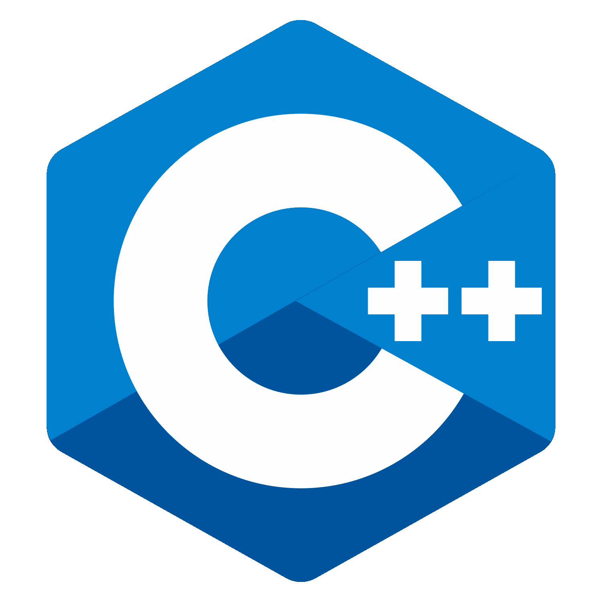>
C++ Italy – June 19, 2021
Kris van Rens
What’s ahead?
- Introduction
- Templates in practice
- Taming templates
- Template metaprogramming
- Questions


A little bit about me


The premise and goals


Introduction
C++ and libraries today
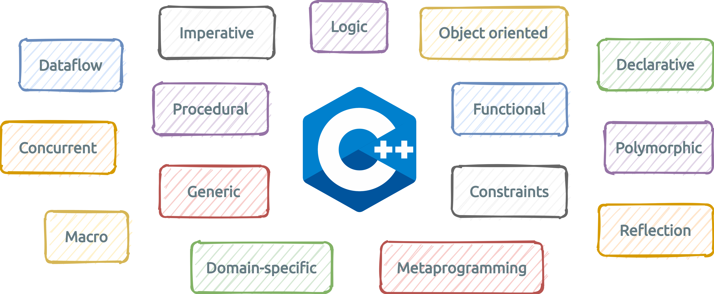
C++ and libraries today
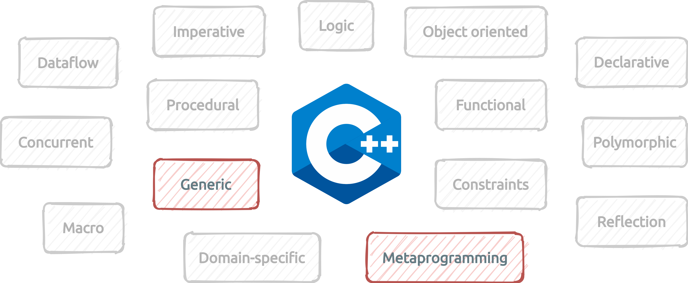
A bit of history..
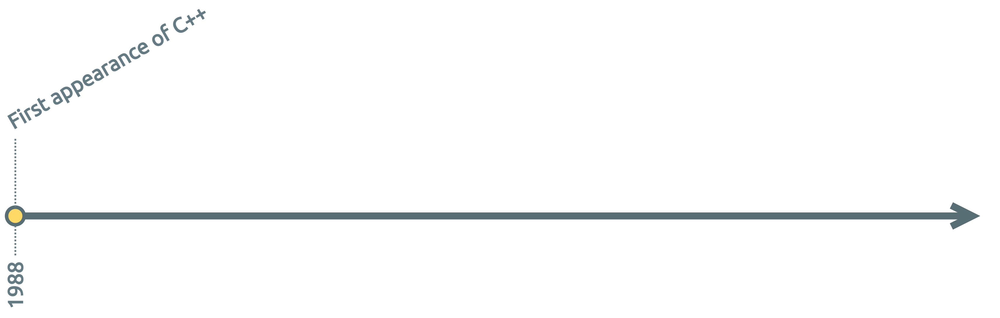
A bit of history..
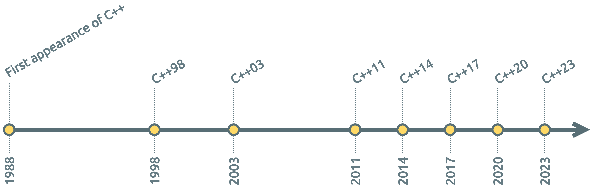
A bit of history..
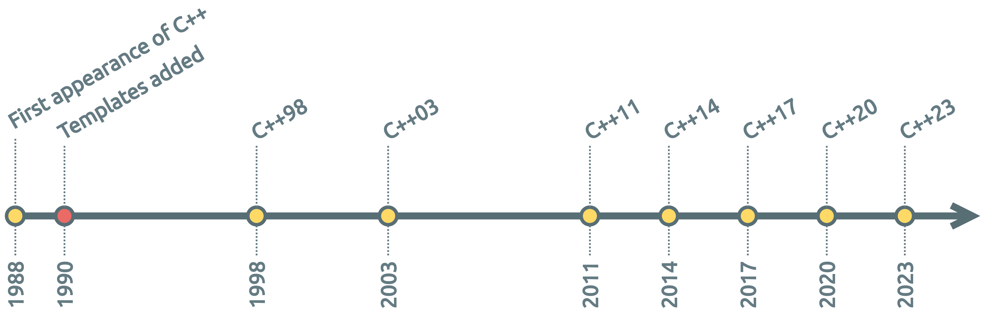
A bit of history..
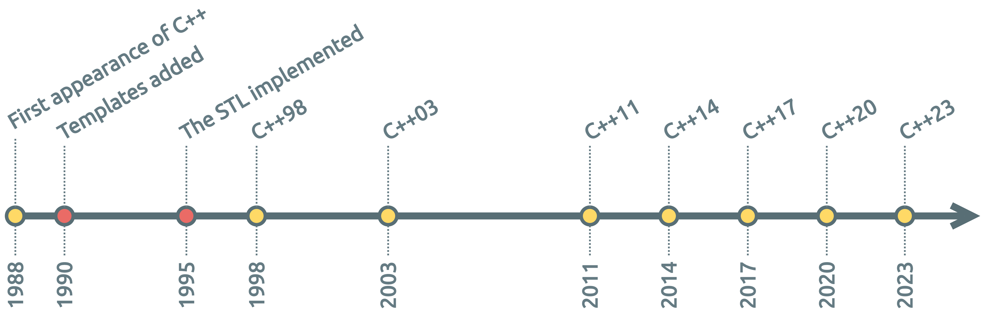
A bit of history..
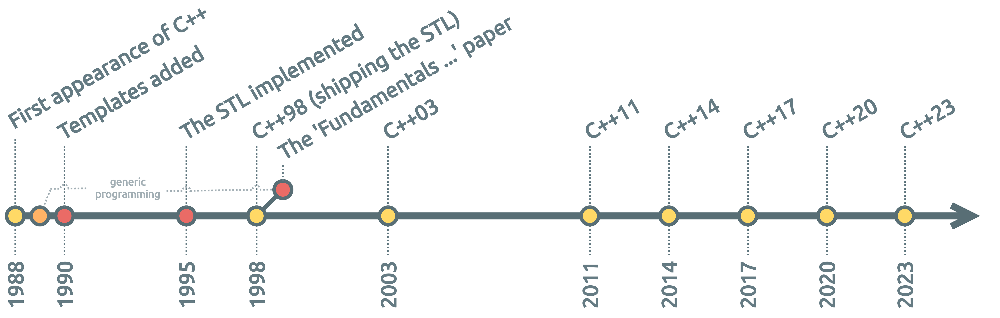
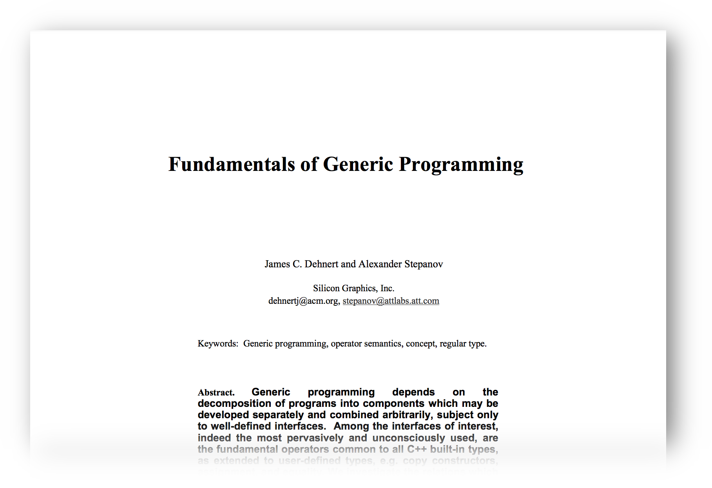
Alexander Stepanov
A bit of history..
A bit of history..
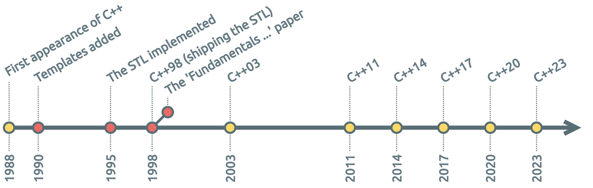
A bit of history..
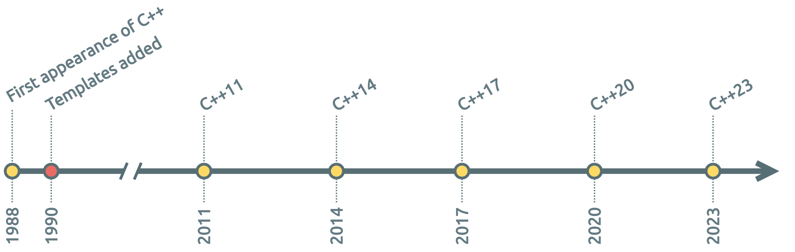
A bit of history..
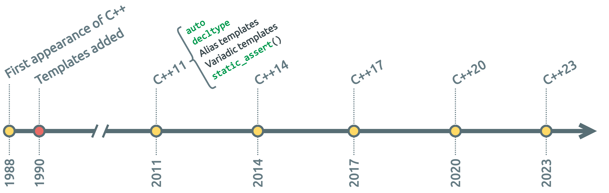
A bit of history..
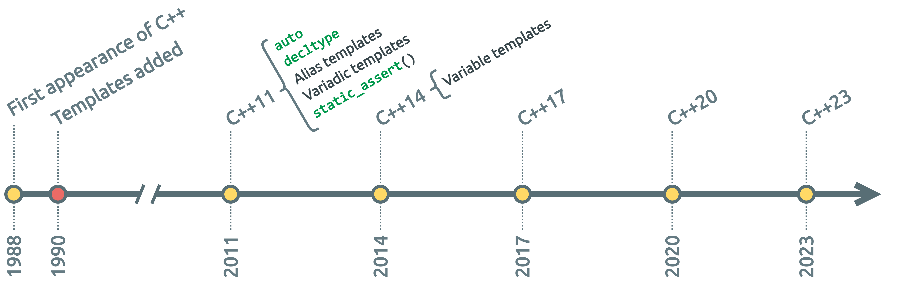
A bit of history..
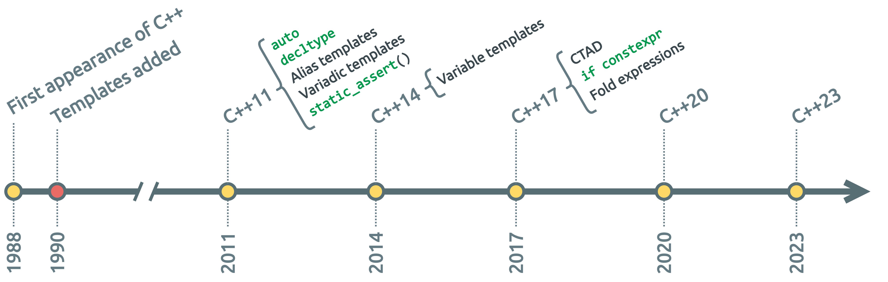
A bit of history..
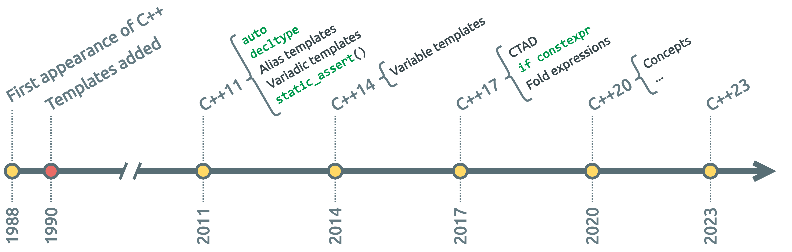
What are templates?
A template is a cookie-cutter that specifies how to cut cookies that all look pretty much the same (although the cookies can be made of various kinds of dough, they’ll all have the same basic shape).
From: The C++ FAQ
What are templates?
A template is a “pattern” that the compiler uses to generate a family of classes/functions/variables.
The trade-off is a longer compilation time 
What templates can do
- Simplify code and architecture, improve reuse,
- Move code interpretation to compile-time,
- Do certain things otherwise impossible.
<digression> …
Compile-time programming
Look ma, no templates!
constexpr unsigned long factorial(unsigned long value) {
return (value == 1 ? 1 : value * factorial(value - 1));
}
int main() {
return factorial(5);
}Output:
main:
mov eax, 120
retAway with FUD!
Templates allow compile-time programming.
Not all compile-time programming is templates.
… </digression>
Kinds of templates
- Function templates (since C++98)
- Class template (since C++98)
- Alias templates (since C++11)
- Variable templates (since C++14)
- Concepts (since C++20)
Function templates
Regular function:
int cube(int value) {
return value * value * value;
}
int result = cube(5);Function template:
template<typename Type>
Type cube(Type value) {
return value * value * value;
}auto result1 = cube(5); // int
auto result2 = cube(0.4f); // float
auto result3 = cube(0.73); // double
auto result4 = cube(std::complex{3.2f, 2.73f});Or, using C++20 abbreviated function templates:
auto cube(auto value) {
return value * value * value;
}Class templates
Regular class:
class Point {
int x_ = 0;
int y_ = 0;
public:
std::pair<int, int> get() const {
return {x_, y_};
}
};
Point p;
int [x, y] = p.get();Class template:
template<typename Type>
class Point {
Type x_ = {};
Type y_ = {};
public:
std::pair<Type, Type> get() const {
return {x_, y_};
}
};Point<int> p1;
Point<float> p2;
auto [x1, y1] = p1.get();
auto [x2, y2] = p2.get();Variable templates
Helpers for traits:
template<typename Type>
struct trait {
static constexpr bool value = true;
};
template<typename Type>
static constexpr bool trait_v = trait<Type>::value;static_assert(trait<Type>::value, "Trait must hold");
static_assert(trait_v<Type>, "Trait must hold");Constant variables:
template<typename Type>
constexpr Type e = 2.71828182845904523536028747135666L;auto threshold1 = 100 * e<float>;
auto threshold2 = 100 * e<double>;
auto threshold3 = 100 * e<long double>;Alias templates
Given this class template:
template<typename KeyType, typename ValueType>
struct Map;Regular alias definition:
using CharToFloat = Map<char, float>;
using IntToFloat = Map<int, float>;
using LongToFloat = Map<long, float>;Alias template:
template<typename KeyType>
using FloatMap = Map<KeyType, float>;FloatMap<char> a;
FloatMap<int> b;
FloatMap<long> c;
FloatMap<std::string> d;
// ...Concepts
Since C++20, used for modeling syntactic and semantic constraints
Concept:
#include <concepts>
template<typename T>
concept EqualityComparable = requires (T a, T b) {
{ a == b } -> std::same_as<bool>;
{ a != b } -> std::same_as<bool>;
};Usage:
bool is_equal(const EqualityComparable auto &a,
const EqualityComparable auto &b) {
return a == b;
}Ensures a and b can be compared
Template parameters
Type vs. non-type
Type parameter
template<typename Type>
struct List {};
auto l1 = List<int>{};
auto l2 = List<float>{};Non-type parameter
template<unsigned int Size>
struct Stack {};
auto s1 = Stack<3>{};
auto s2 = Stack<17>{};Non-type parameters
Examples of non-type parameters:
template<auto N> Generic { /* ... */ };Up until C++17 
Generic<42> g1;
Generic<true> g2;
Generic<'t'> g3;
Generic<nullptr> g4;
Generic<&obj> g5;Since C++20
Generic<4.2f> g6;
Generic<1.7> g7;
Generic<MyCustomType> g8;
Generic<[]{ return 42; }> g9;
Generic<arr[0]> g10;
Generic<"Unix"> g11;Template template parameters
template<typename Type>
struct ContainerA { /* ... */ };
template<typename Type>
struct ContainerB { /* ... */ };
template<template<typename> typename Container>
struct IntegerStorage {
Container<int> container_;
};
IntegerStorage<ContainerA> l1;
IntegerStorage<ContainerB> l2;Template template parameters
template<typename Type>
struct ContainerA { /* ... */ };
template<typename Type>
struct ContainerB { /* ... */ };
template< template<typename> typename Container >
// ^^^^^^^^^^^^^^^^^^
// template type with one type argument expected
//
struct IntegerStorage {
Container<int> container_;
};
IntegerStorage<ContainerA> l1;
IntegerStorage<ContainerB> l2;Variadic templates
template<typename... Args>
int naivePrintfWrapper(const std::string& fFormat, Args... fArgs) {
return printf(fFormat.c_str(), fArgs...); // Just copy all the arguments.
}naivePrintfWrapper("How are you today?\n");
naivePrintfWrapper("Message: %s - %d\n", __FUNCTION__, __LINE__);
naivePrintfWrapper("[%.2f, %.2f, %.2f]\n", 3.14f, 2.78f, 10.1f);Related topics: parameter packs, fold expressions
Templates in practice
Type templates
Let’s build a simple stack type:
class Stack {
std::deque<...> data_;
public:
void push(... &&element);
std::optional<...> pop();
};Type templates
template<typename Type>
class Stack {
std::deque<Type> data_;
public:
void push(Type&& element);
std::optional<Type> pop();
};template<typename Type>
void Stack<Type>::push(Type&& element) {
data_.push_back(std::move(element));
}
template<typename Type>
std::optional<Type> Stack<Type>::pop() {
std::optional<Type> result;
if (data_.empty()) {
return result;
}
result = std::move(data_.back());
data_.pop_back();
return result;
}Type templates
The stack in action:
Stack<int> s1;
s1.push(42);
s1.push(17);
Stack<std::string> s2;
s2.push("World");
s2.push("Peace");int v1 = s1.pop().value(); // 17.
int v2 = s1.pop().value(); // 42.
auto v3 = s1.pop(); // std::nullopt;
auto v4 = s2.pop().value(); // "Peace".
auto v5 = s2.pop(); // std::optional of "World".
auto v6 = s2.pop(); // std::nullopt;
auto v7 = s2.pop(); // std::nullopt;Default values for types
Suppose we want the template argument to be optional:
template<typename Type> // ???
class Stack {
std::deque<Type> data_;
public:
void push(Type&& element);
std::optional<Type> pop();
};Stack s1; // Should instantiate Stack<int>.
s1.push(42);
Stack<std::string> s2;
s2.push("Hey!");
// Etc.
Default values for types
Suppose we want the template argument to be optional:
template<typename Type = int>
class Stack {
std::deque<Type> data_;
public:
void push(Type&& element);
std::optional<Type> pop();
};Stack s1; // Instantiates Stack<int>.
s1.push(42);
Stack<std::string> s2;
s2.push("Hey!");
// Etc.There are limitations as to where default arguments can be used
Non-type template parameter
Let’s add a maximum size:
template<typename Type, unsigned int MaxSize>
class Stack {
std::deque<Type> data_;
public:
void push(Type&& element);
std::optional<Type> pop();
};template<typename Type, unsigned int MaxSize>
void Stack<Type, MaxSize>::push(Type&& element) {
if (data_.size() < MaxSize) {
data_.push_back(std::move(element));
}
}
template<typename Type, unsigned int MaxSize>
std::optional<Type> Stack<Type, MaxSize>::pop() {
std::optional<Type> result;
if (data_.empty()) {
return result;
}
result = std::move(data_.back());
data_.pop_back();
return result;
}Template specialization
How can we create a specific version for MaxSize == 1?
template<typename Type, unsigned int MaxSize>
class Stack { /* ... */ }; // 'primary template'.
template<typename Type>
class Stack<Type, 1> {
Type data_;
bool empty_ = true;
public:
void push(Type&& element);
std::optional<Type> pop();
};This is a partial specialization
template<typename Type>
void Stack<Type, 1>::push(Type&& element) {
if (empty_) {
data_ = std::move(element);
empty_ = false;
}
}
template<typename Type>
std::optional<Type> Stack<Type, 1>::pop() {
std::optional<Type> result;
if (empty_) {
return result;
}
result = std::move(data_);
empty_ = true;
return result;
}Taming templates
Polymorphism in C++
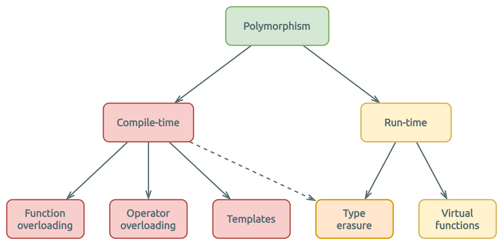
Compile-time polymorphism
Also: static polymorphism
template<typename Type>
void log(Type& printable) {
printable.print();
}struct A {
void print() { /* ... */ }
};
struct B {
void print() { /* ... */ }
};A a;
B b;
log(a); // Instantiates 'log<A>()'.
log(b); // Instantiates 'log<B>()'.Implicit interface:
Expects Type::print() implicitly
Constraining templated entities
Now let’s break it:
template<typename Type>
void log(Type& printable) {
printable.print();
}struct A {
void print() { /* ... */ }
};
struct B {
// No print()..
};A a;
B b;
log(a); // Instantiates 'log<A>()'.
log(b); // Will try to instantiate 'log<B>()'.<source>: In instantiation of 'void log(Type&) [with Type = B]':
<source>: required from here
<source>:3: error: 'struct B' has no member named 'print'
3 | printable.print();
| ~~~~~~~~~~^~~~~That’s not so bad really..
Constraining templated entities
std::vector<std::vector<int>> v;
auto result = std::find(v.begin(), v.end(), 42); // NOTE: No match for operator==.In file included from /opt/include/c++/11.1.0/bits/stl_algobase.h:71,
from /opt/include/c++/11.1.0/vector:60,
from <source>:1:
/opt/include/c++/11.1.0/bits/predefined_ops.h: In instantiation of 'bool __gnu_cxx::__ops::_Iter_equals_val<_Value>::operator()(_Iterator) [with _Iterator = __gnu_cxx::__normal_iterator<std::vector<int>*, std::vector<std::vector<int> > >; _Value = const int]':
/opt/include/c++/11.1.0/bits/stl_algobase.h:2069:14: required from '_RandomAccessIterator std::__find_if(_RandomAccessIterator, _RandomAccessIterator, _Predicate, std::random_access_iterator_tag) [with _RandomAccessIterator = __gnu_cxx::__normal_iterator<std::vector<int>*, std::vector<std::vector<int> > >; _Predicate = __gnu_cxx::__ops::_Iter_equals_val<const int>]'
...232 more lines...
Constraining templated entities
Templates create a ‘Duck Typing’ scenario: anything is allowed. Improve modelling by imposing constraints.

- C++20 concepts,
static_assert(),- Type traits.
Static assertions
Preventing misuse of Stack<>:
template<typename Type, unsigned int MaxSize>
class Stack {
static_assert(MaxSize != 0, "MaxSize cannot be zero");
std::deque<Type> data_;
public:
void push(Type&& element);
std::optional<Type> pop();
};Stack<int, 16> s1; // OK.
Stack<int, 0> s2; // Compiler error!Static assertions
Preventing misuse of Stack<>:
template<typename Type, unsigned int MaxSize>
class Stack {
static_assert(MaxSize != 0, "MaxSize cannot be zero");
std::deque<Type> data_;
public:
void push(Type&& element);
std::optional<Type> pop();
};Stack<int, 16> s1; // OK.
Stack<int, 0> s2; // Compiler error!error: static_assert failed due to requirement '0U != 0'
"MaxSize cannot be zero"
static_assert(MaxSize != 0, "MaxSize cannot be zero");
^ ~~~~~~~~~~~~Type traits
Type traits enable type evaluation and modification.
… at compile-time
A rational number
template<typename Type>
class Fraction {
Type numerator_ = {};
Type denominator_ = {};
public:
Fraction(Type numerator, Type denominator)
: numerator_{numerator},
denominator_{denominator} {
}
Type numerator() { return numerator_; }
Type denominator() { return denominator_; }
double real() {
return static_cast<double>(numerator_) / denominator_;
}
};Fraction<int> a{22, 7};
Fraction<unsigned long> b{355U, 113U};
printf("a = %.8lf\n", a.real());
printf("b = %.8lf\n", b.real());a = 3.14285714
b = 3.14159292A rational number
template<typename Type>
class Fraction {
Type numerator_ = {};
Type denominator_ = {};
public:
Fraction(Type numerator, Type denominator)
: numerator_{numerator},
denominator_{denominator} {
}
Type numerator() { return numerator_; }
Type denominator() { return denominator_; }
double real() {
return static_cast<double>(numerator_) / denominator_;
}
};Fraction<int> a{22, 7};
Fraction<unsigned long> b{355U, 113U};
Fraction<double> c{3.14159265, 1.0};
Fraction<bool> d{true, true};
printf("a = %.8lf\n", a.real());
printf("b = %.8lf\n", b.real());
printf("c = %.8lf\n", c.real());
printf("d = %.8lf\n", d.real());a = 3.14285714
b = 3.14159292
c = 3.14159265
d = 1.00000000Hmmm…
Imposing constraints
template<typename Type>
class Fraction {
static_assert(/* ..insert compile-time check.. */,
"Not a non-boolean integral type");
public:
// ...
};Fraction<double> c{3.14159265, 1.0};
Fraction<bool> d{true, true};
...a compiler error would be nice!...
Imposing constraints
template<typename Type>
class Fraction {
static_assert(std::is_integral<Type>::value && !std::is_same<Type, bool>::value,
"Not a non-boolean integral type");
public:
// ...
};Fraction<double> c{3.14159265, 1.0};
Fraction<bool> d{true, true};<source>: In instantiation of 'class Fraction<double>': required from here:
<source>: error: static assertion failed: Not a non-boolean integral type
| static_assert(std::is_integral<Type>::value && !std::is_same<Type, bool>::value,
| ^~~~~
<source>: In instantiation of 'class Fraction<bool>': required from here:
<source>: error: static assertion failed: Not a non-boolean integral type
| static_assert(std::is_integral<Type>::value && !std::is_same<Type, bool>::value,
| ^~~~~Imposing constraints
template<typename Type>
class Fraction {
static_assert(std::is_integral_v<Type> && !std::is_same_v<Type, bool>,
"Not a non-boolean integral type");
public:
// ...
};Fraction<double> c{3.14159265, 1.0};
Fraction<bool> d{true, true};<source>: In instantiation of 'class Fraction<double>': required from here:
<source>: error: static assertion failed: Not a non-boolean integral type
| static_assert(std::is_integral_v<Type> && !std::is_same_v<Type, bool>,
| ~~~~~^~~~~~~~~~~~~
<source>: In instantiation of 'class Fraction<bool>': required from here:
<source>: error: static assertion failed: Not a non-boolean integral type
| static_assert(std::is_integral_v<Type> && !std::is_same_v<Type, bool>,
| ~~~~~^~~~~~~~~C++20 Concepts
A concept is a named set of requirements on template parameters. It can be used to select function overloads and template specializations.
A concept is a predicate, evaluated at compile-time.
Concept form
template <template-parameter-list>concept concept-name = constraint-expression; |
||
E.g.:
template<typename Type>
concept UnsignedIntegral = std::is_integral_v<Type> && !std::is_signed_v<Type>;template<typename Type>
concept Addable = requires (Type x) { x + x; };Concept example
template<typename Type>
concept UnsignedIntegral = std::is_integral_v<Type> && !std::is_signed_v<Type>;template<UnsignedIntegral Type, Type Threshold>
struct Filter {
bool operator()(Type value) const {
return value > Threshold;
}
};
// Filter<long, 32> fail; // <-- Won't compile!
Filter<unsigned int, 32> f;
f(40); // True.
f(10); // False.Back to Fraction
#include <type_traits>
template<typename Type>
class Fraction {
static_assert(std::is_integral_v<Type> && !std::is_same_v<Type, bool>,
"Not a non-boolean integral type");
public:
// ...
};Fraction<int> f1; // OK.
Fraction<float> f2; // Error: static assertion fails.Back to Fraction
#include <concepts>
template<typename Type>
concept NonBooleanIntegral = std::integral<Type> && !std::same_as<Type, bool>;
template<NonBooleanIntegral Type>
class Fraction {
public:
// ...
};Fraction<int> f1; // OK.
Fraction<float> f2; // Error: constraints not satisfied.Concept usage forms
template<typename Type>
concept UnsignedIntegral = std::is_integral_v<Type> && !std::is_signed_v<Type>;Form 1:
template<UnsignedIntegral Type>
void func(Type value) {
// ...
}Form 2:
template<typename Type> requires UnsignedIntegral<Type>
void func(Type value) {
// ...
}Form 3:
template<typename Type>
void func(Type value) requires UnsignedIntegral<Type> {
// ...
}The requires keyword
The requires keyword introduces a requires-clause
Constant expression / concept:
template<typename Type>
requires std::is_integral_v<Type>
struct X {
// ...
};
template<typename Type>
requires Integral<Type>
struct X {
// ...
};Requires-expression:
template<typename Type>
concept Addable = requires (Type x) { x + x; };template<typename Type>
requires requires (Type x) { x + x; }
Type add(Type a, Type b) {
return a + b;
}Template meta-programming
Serendipity
- Template metaprogramming was ‘discovered’
- In 1994 Erwin Unruh demonstrated this at a committee meeting
- In fact, the template system is Turing-complete
Examples
Compile-time Fibonacci number calculation:
template<int Index, int A = 0, int B = 1>
struct Fibonacci {
static constexpr int value = Fibonacci<Index - 1, B, A + B>::value;
};
template<int A, int B>
struct Fibonacci<0, A, B> {
static constexpr int value = A;
};
template<int A, int B>
struct Fibonacci<1, A, B> {
static constexpr int value = B;
};
int main() {
return Fibonacci<8>::value;
}Fibonacci sequence:
0 1 1 2 3 5 8 13 21 34 ...
^^Build output:
main:
mov eax, 21
retExamples
Compile-time Fibonacci number calculation:
template<int Index, int A = 0, int B = 1>
struct Fibonacci {
static constexpr int value = Fibonacci<Index - 1, B, A + B>::value;
};
template<int A, int B>
struct Fibonacci<0, A, B> {
static constexpr int value = A;
};
template<int A, int B>
struct Fibonacci<1, A, B> {
static constexpr int value = B;
};
int main() {
return Fibonacci<8>::value;
}Instantiations:
Fibonacci<8, 0, 1>
Examples
Compile-time Fibonacci number calculation:
template<int Index, int A = 0, int B = 1>
struct Fibonacci {
static constexpr int value = Fibonacci<Index - 1, B, A + B>::value;
};
template<int A, int B>
struct Fibonacci<0, A, B> {
static constexpr int value = A;
};
template<int A, int B>
struct Fibonacci<1, A, B> {
static constexpr int value = B;
};
int main() {
return Fibonacci<8>::value;
}Instantiations:
Fibonacci<8, 0, 1>
Fibonacci<7, 1, 1>
Fibonacci<6, 1, 2>
Fibonacci<5, 2, 3>
Fibonacci<4, 3, 5>
Fibonacci<3, 5, 8>
Fibonacci<2, 8, 13>
Examples
Compile-time Fibonacci number calculation:
template<int Index, int A = 0, int B = 1>
struct Fibonacci {
static constexpr int value = Fibonacci<Index - 1, B, A + B>::value;
};
template<int A, int B>
struct Fibonacci<0, A, B> {
static constexpr int value = A;
};
template<int A, int B>
struct Fibonacci<1, A, B> {
static constexpr int value = B;
};
int main() {
return Fibonacci<8>::value;
}Instantiations:
Fibonacci<8, 0, 1>
Fibonacci<7, 1, 1>
Fibonacci<6, 1, 2>
Fibonacci<5, 2, 3>
Fibonacci<4, 3, 5>
Fibonacci<3, 5, 8>
Fibonacci<2, 8, 13>
Fibonacci<1, 13, 21>Done!
Examples
Compile-time Fibonacci number calculation:
template<int Index, int A = 0, int B = 1>
struct Fibonacci {
static constexpr int value = Fibonacci<Index - 1, B, A + B>::value;
};
template<int A, int B> // Specialization is not used here.
struct Fibonacci<0, A, B> {
static constexpr int value = A;
};
template<int A, int B>
struct Fibonacci<1, A, B> {
static constexpr int value = B;
};
int main() {
return Fibonacci<8>::value;
}Instantiations:
Fibonacci<8, 0, 1>
Fibonacci<7, 1, 1>
Fibonacci<6, 1, 2>
Fibonacci<5, 2, 3>
Fibonacci<4, 3, 5>
Fibonacci<3, 5, 8>
Fibonacci<2, 8, 13>
Fibonacci<1, 13, 21>Done!
One slide on SFINAE
Abbreviation for “Substitution Failure Is Not An Error”
A rule for overload resolution in function templates, used in TMP
 Avoid direct use if possible
Avoid direct use if possible
(unless you really know what you’re doing)
End
If you want to know it all
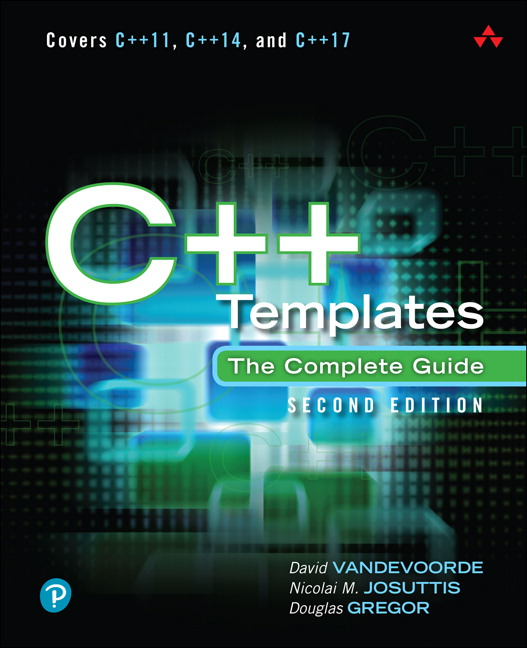
Thank you 

If you think this is cooler than ice cream, you’ve got the makings of a template metaprogrammer. If the templates and specializations, recursive instantiations and
enumhacks and […] make your skin crawl, well, you’re a pretty normal C++ programmer.
— Scott Meyers, Effective C++